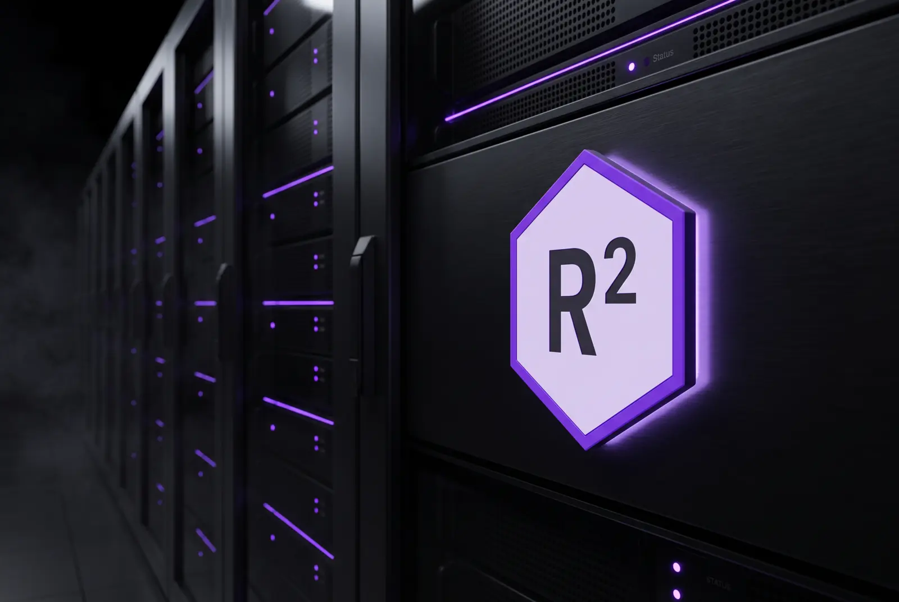
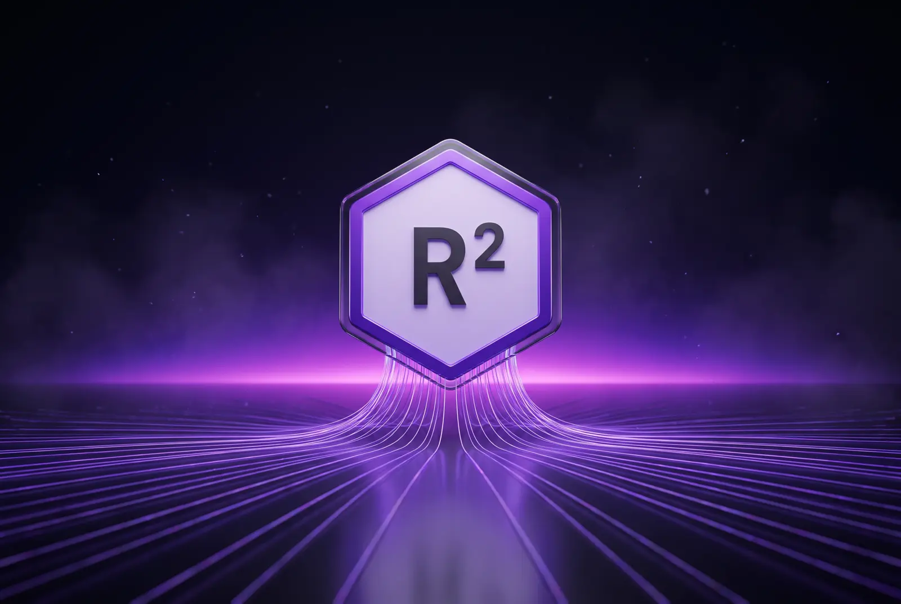

01
Managed Security
24/7 SOC monitoring, Splunk-driven threat hunting, and incident response that closes findings — not just tickets.
Sandton · Johannesburg — Enterprise IT Engineering
RSquared IT Technologies designs, secures, and automates enterprise networks — one engineering team from the access layer to the cloud edge.
The Platform
The RSquared Operations Core is our managed platform for enterprise infrastructure: network fabric, security operations, and cloud automation run as a single, continuously validated system.
Multi-vendor LAN, WAN, and wireless built on Cisco, Aruba, and MikroTik — segmented to zero-trust principles with HSRP/VRRP redundancy at the gateway.


Splunk SIEM correlation, FortiGate and Cisco FTD firewalls, and a 24/7 SOC that owns incidents from first alert to closed finding.
Azure and AWS architecture delivered as code — Terraform for provisioning, Ansible for configuration, pyATS to prove every change before it ships.

Capabilities
End-to-end ownership means no hand-offs and no gaps. Every discipline below is designed, deployed, and operated by the same engineers.
01
24/7 SOC monitoring, Splunk-driven threat hunting, and incident response that closes findings — not just tickets.
02
Enterprise LAN/WAN design, VLAN segmentation, and wireless engineered to hold up on a full floor.
03
Azure and AWS architecture, hybrid connectivity, and SD-WAN overlays — all defined in Terraform.
04
Ansible playbooks, pyATS test suites, and GitHub Actions pipelines that validate every change before production.
05
Structured cabling, IoT segmentation, IP access control, and surveillance converged on one managed network.
06
Tenant design, Azure AD identity, SharePoint intranets, and Power Automate workflows — governed properly.
Automation First
Configurations live in Git, Ansible applies them, pyATS proves them, and GitHub Actions gates the release — so production only ever sees what already passed.
Git→Ansible→pyATS→Actions gate→Production
How We Deliver
Phase 01
Infrastructure audit, gap analysis, and risk benchmarking before anything is touched.
Phase 02
HLD and LLD documentation, vendor selection, and a design you can hold us to.
Phase 03
CI/CD-validated rollout with automated testing and controlled change windows.
Phase 04
24/7 SOC monitoring, incident response, and continuous optimisation under SLA.
Impact
POPIA-aligned · ISO 27001-ready · Documented, always
Ready When You Are
Tell us about your environment and we will come back within one business day with a clear, actionable plan.